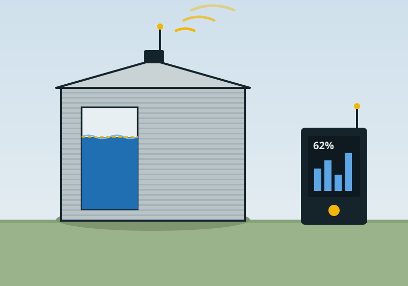

Know how much water is in every tank, from the house.
A battery-powered sensor on the tank lid measures the water level and sends it by radio to a receiver up to several kilometres away. You see each tank's level, your daily use and how many days you have left.

Your water, at a glance
This is what you'll see on the receiver and your phone. It's running on sample data for two tanks, so change the tank or time range to explore it.
Current tank level
Current level
–
Average daily use
–
Days remaining
–
At your average use, with no rain
Rain collected
–
Daily water use
Litres per day. Dashed line shows the average.
Tank level
Percent full. Rises are rainfall or a refill.
Show the data as a table
| Date | Used (L) | Rain in (L) | Level at end of day |
|---|
How it works
Measures from the lid
An ultrasonic sensor measures the distance down to the water. Nothing goes in the water, and it fits any tank with a lid or inspection hatch.
Long-range radio
Readings go out over LoRa radio, which reaches across paddocks and hills without needing mobile coverage or Wi-Fi at the tank.
Runs for years on a battery
The sensor wakes, takes a reading, sends it and goes back to sleep. A small solar panel is available for very remote tanks.
Low-water alerts
Set a level for each tank. When it drops below, you get a text or app alert so you can act before the taps stop.
Leak detection
A sudden overnight drop when nobody should be using water usually means a leak or a burst pipe. We flag it.
Several tanks, one screen
One receiver handles many sensors, so house, stock and fire-fighting tanks all show in one place.
Target specifications
These may change as testing goes on.
| Measurement | Ultrasonic, non-contact, ±1 cm |
|---|---|
| Tank depth | 0.3 m to 5 m |
| Radio range | Up to 5 km line of sight (LoRa) |
| Reading interval | Every 15 minutes, adjustable |
| Power | Lithium battery, 3+ years; optional solar |
| Enclosure | IP67, UV-stabilised |
| Receiver | Mains powered, shows levels on screen and sends them to your phone over Wi-Fi |
Want to be in the first trial?
Tell us how many tanks you have and how far they are from the house.